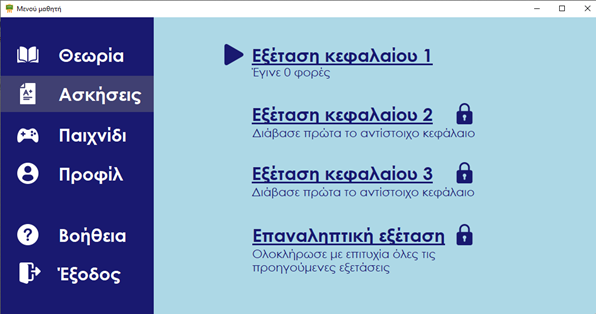

Online βοήθεια της εφαρμογής
Ασκήσεις
Αναγκαία προϋπόθεση για να έχει πρόσβαση ο μαθητής σε επόμενα κεφάλαια διδασκαλίας είναι να έχει καταγράψει άριστη επίδοση στα τεστ που του παρέχονται από την εφαρμογή.
Σε ένδειξη κάτω από το εκάστοτε τεστ αναγράφεται ο αριθμός των δοκιμών που έχει κάνει ο χρήστης καθώς και ο καλύτερός του βαθμός. Με βάση την επίδοσή του θα εμφανίζεται και ένα εικονίδιο - emoji.
Τα τεστ αποτελούνται από ασκήσεις συμπλήρωσης του αριθμού που λείπει από την εξίσωση.
Στην περίπτωση που η απάντηση του χρήστη είναι σωστή θα ακούγεται ένας χαρακτηριστικός ήχος, θα εμφανίζεται μία πράσινή ένδειξη και ο χρήστης θα προχωράει στην επόμενη ερώτηση.
Στη περίπτωση που ο μαθητής κάνει λάθος, θα εμφανίζεται το σωστό αποτέλεσμα και μία κόκκινη ένδειξη και θα συνεχίζεται η ροή του τεστ.
Τέλος, κατά την ολοκλήρωση του συνόλου των ασκήσεων θα εμφανίζεται σχετικό μήνυμα.